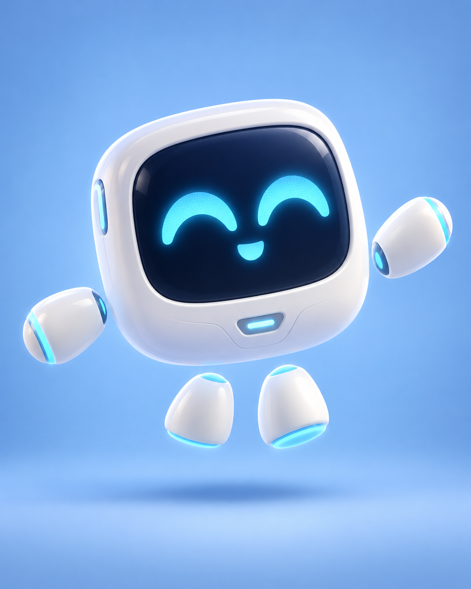
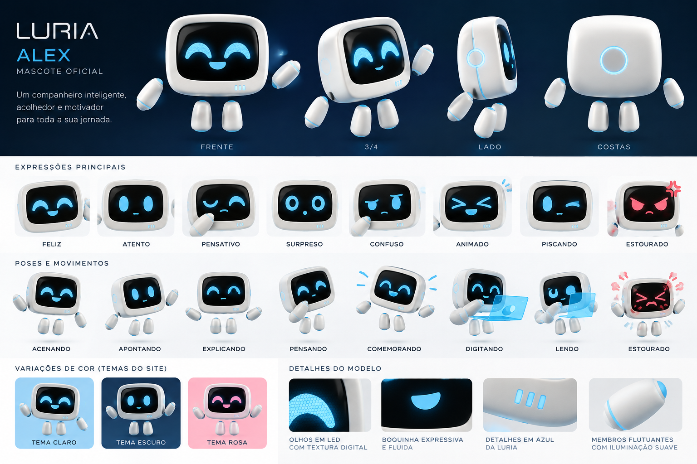

UM NOVO COMPANHEIRO DE JORNADA
Conheça o Professor Alex.
Inteligente, acolhedor e agora em 3D. Explore suas expressões e dê vida a cada movimento.
Em validação visual
MODELO 3D INTERATIVO
Preparando o modelo…
Clique ou toque para cumprimentarExplore o volume
Referências de identidade visual Comparar o modelo com as imagens originais

